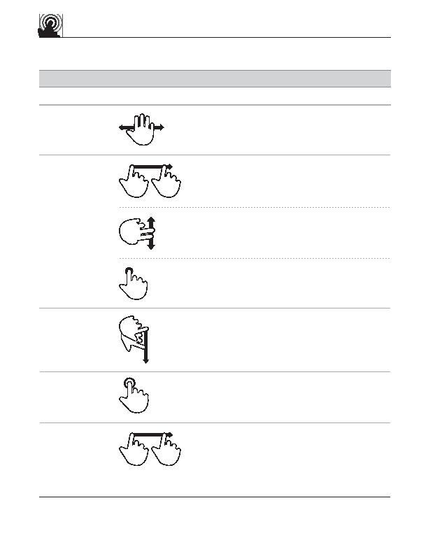

touch gesture
reference guide
Scroll
o
Supporting materials for this guide can be found online:
http://www.lukew.com/touch/
user action
gesture
description
NAVIGATING ACTIONS (continued)
Move two fingers up or down across
surface
press
Touch scrollbar for extended period
of time
flick
Quickly brush surface with fingertip in
the direction you want to scroll
Pan
Move fingers and palm of one hand
over surface without losing contact
two-finger drag
Briefly touch surface with fingertip when
a scroll is in progress
tap
drag
Move fingertip over scrollbar without
losing contact
Scroll (fast)
Scroll (fast)
Move fingertip over scrollbar without
losing contact
Scrub
drag
drag hand